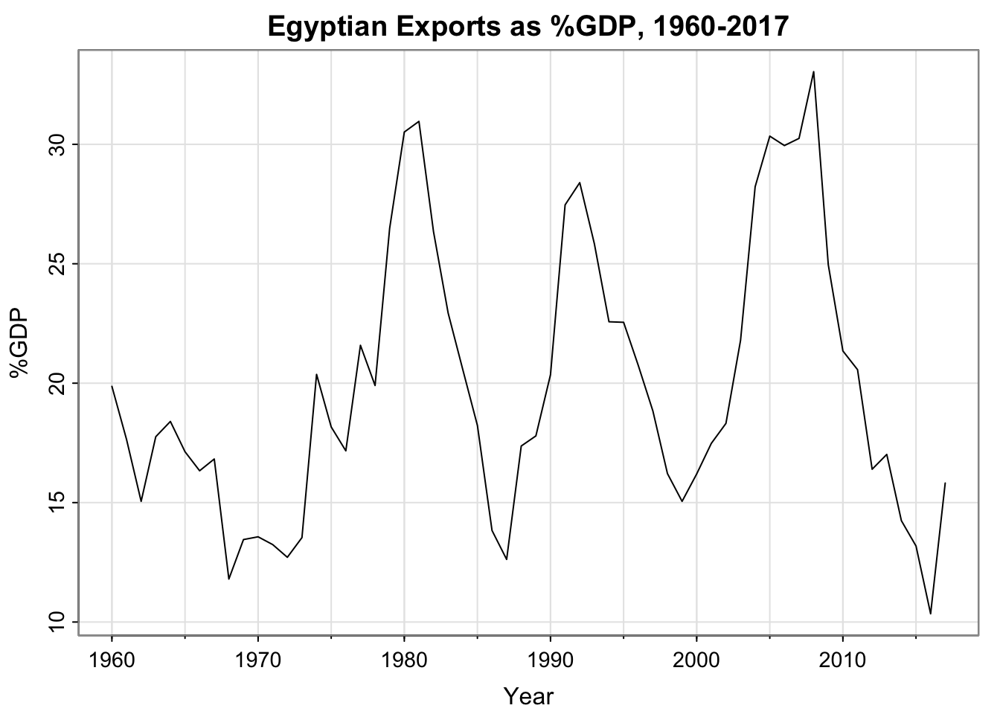
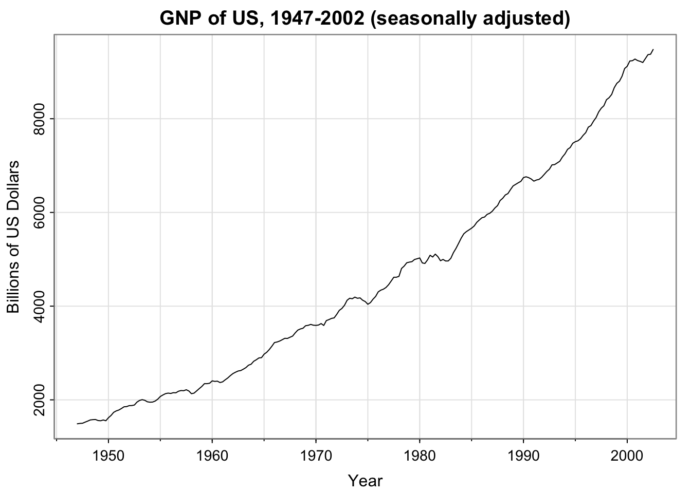
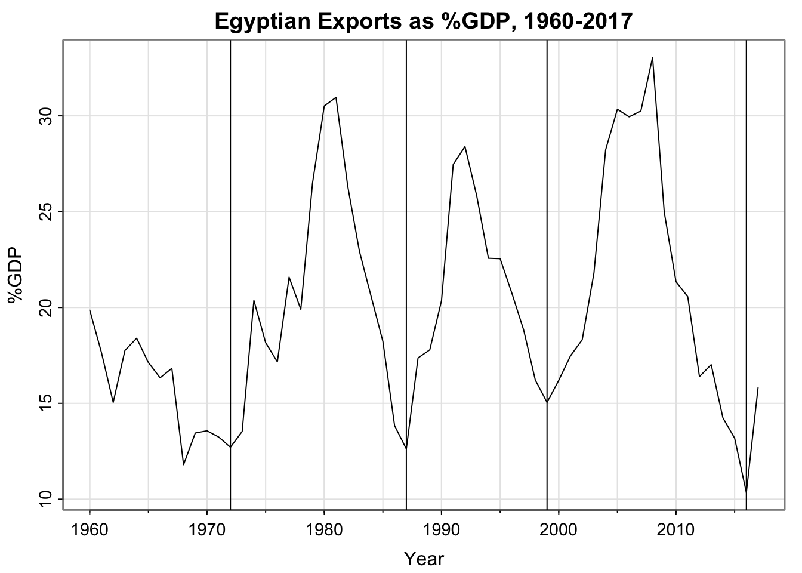
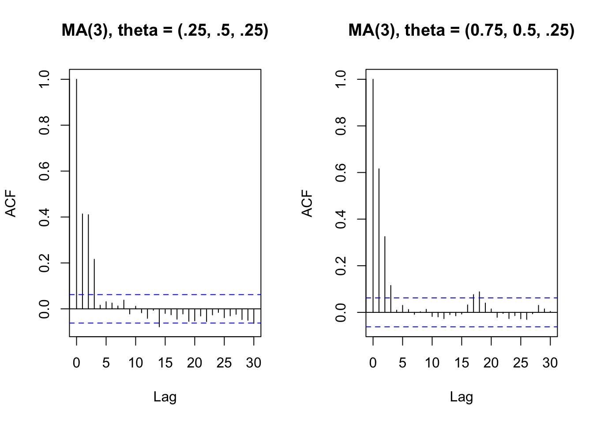
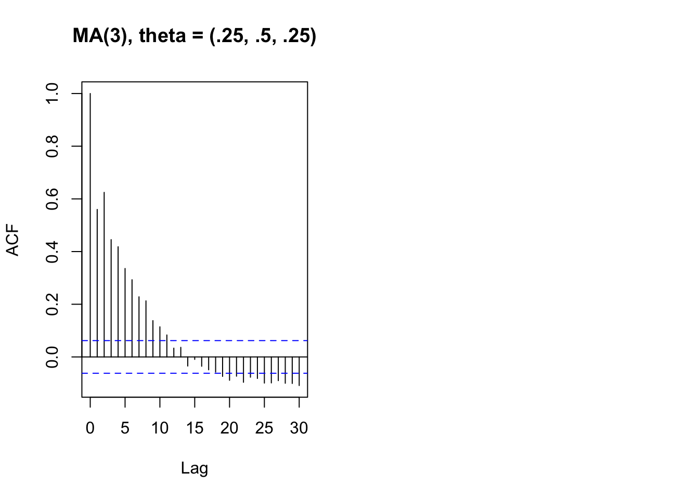

── Conflicts ────────────────────────────────────────── tidyverse_conflicts() ──
✖ dplyr::filter() masks stats::filter()
✖ tsibble::interval() masks lubridate::interval()
✖ dplyr::lag() masks stats::lag()
ℹ Use the conflicted package (<http://conflicted.r-lib.org/>) to force all conflicts to become errors
Code
library(astsa)egy_econ <- global_economy %>% dplyr::filter(Code =="EGY")tsplot(x = egy_econ$Year, y = egy_econ$Exports, ylab ="%GDP",xlab ="Year", main ="Egyptian Exports as %GDP, 1960-2017")

“Observations” of the day
Code
library(astsa)tsplot(gnp, xlab ="Year", ylab ="Billions of US Dollars", main ="GNP of US, 1947-2002 (seasonally adjusted)")

Activity 1: Define a question
Research Questions of the Day
What is the estimated value of the Quarterly Adjusted GNP for 2002, Q4?
What is the estimated percent of Egyptian GDP due to exports in 2018?
Note: These are both forecasting questions.
Methodological Questions of the Day
When do we want to fit an ARMA model?
When do we want to fit an ARIMA model?
How do we identify the order(s) of the ARIMA(p,d,q) model?
How can we check assumptions of a model?
How do we compare models?
How can we forecast from a model?
Definition of ARMA model
A time series \(x_t\) is ARMA(p,q) if
\[
x_t = \alpha + \phi_1 x_{t-1} + \phi_2 x_{t-2} + \dots + \phi_p x_{t-p} + w_t + \theta_1 w_{t-1} + \theta_2 w_{t-2} + \dots + \theta_q x_{t-1}
\] Where \(\phi_p \ne 0, \theta_q \ne 0, \sigma^2_w > 0\) (and the model is causal and invertible)
Causal and invertible? 😱
For “causal”, if the time series is stationary it has a causal representation (depends on past, not future)
For “Intertible”, it’s so the moving average part gives us a unique model
A note non-uniqueness of Moving Average
Consider the MA model and its theoretical autocorrelation function, where \(\sigma^2_w\) is the white noise variance
\[
\begin{aligned}
x_t &= w_t + \theta w_{t-1}\\
\gamma(h) &= \begin{cases}
(1+\theta^2)\sigma^2_w & \Vert h \Vert = 0 \\
\theta \sigma^2_w & \Vert h \Vert = 1 \\
0 & \Vert h \Vert > 1
\end{cases}
\end{aligned}
\] Consider two possible values for \(\theta\) and \(\sigma^2_w\):
\(\theta = 5, \sigma^2_w = 1\)
\[
\gamma(h) = \begin{cases}
(1+5^2)\cdot1 & \Vert h \Vert = 0 \\
5\cdot 1 & \Vert h \Vert = 1 \\
0 & \Vert h \Vert > 1
\end{cases}
\]
Both simplify to \[
\gamma(h) = \begin{cases}
26 & \Vert h \Vert = 0 \\
5 & \Vert h \Vert = 1 \\
0 & \Vert h \Vert > 1
\end{cases}
\]
In practice we cannot distinguish the difference between the two models (they are stochastically the same). So, we will choose the invertible model, which is the one with \(\sigma^2_w =25\), \(\theta = 1/5\) (see Shumway and Stoffer page 72-73, example 4.6 for details.)
Interpretation of ARMA model
If we let \(\epsilon_t = w_t + \theta_1 w_{t-1} + \theta_2 w_{t-2} + \dots + \theta_q x_{t-1}\), then if \(x_t\) is ARMA(p,q), \[
x_t = \alpha + \phi_1 x_{t-1} + \phi_2 x_{t-2} + \dots + \phi_p x_{t-p} + \epsilon_t
\]
Recognize the linear regression structure?
Difference: constraints on \(\phi, \theta\).
Activity 2: Fit an ARMA model?
Is there any seasonality (fixed-length cycles)? If so, probably want to use a seasonal model (not ARMA)
Code
tsplot(x = egy_econ$Year, y = egy_econ$Exports, ylab ="%GDP",xlab ="Year", main ="Egyptian Exports as %GDP, 1960-2017")
Activity 2 Solution: Fit an ARMA model?
No, the cycles are not of fixed length
Code
tsplot(x = egy_econ$Year, y = egy_econ$Exports, ylab ="%GDP",xlab ="Year", main ="Egyptian Exports as %GDP, 1960-2017")low_years <-c(1972, 1987, 1999, 2016)abline(v = low_years)

Code
diff(low_years)
[1] 15 12 17
Choosing the order of ARMA models
Activity 3: Recall MA ACF
Code
set.seed(807)par(mfrow =c(1,2))acf(arima.sim(list(ma =c(0.25, 0.5, .25)), n =1000), main ="MA(3), theta = (.25, .5, .25)")acf(arima.sim(list(ma =c(0.75, 0.5, .25)), n =1000),main ="MA(3), theta = (0.75, 0.5, .25)")

Propose a rule for choosing the order of the MA model.
What about AR?
Code
set.seed(807)par(mfrow =c(1,2))acf(arima.sim(list(ar =c(0.25, 0.5)), n =1000), main ="MA(3), theta = (.25, .5, .25)")acf(arima.sim(list(ar =c(0.75, 0.5)), n =1000),main ="MA(3), theta = (0.75, 0.5, .25)")
Error in arima.sim(list(ar = c(0.75, 0.5)), n = 1000): 'ar' part of model is not stationary

Activity 4: Fix the AR model so it is stationary
Code
set.seed(807)par(mfrow =c(1,2))acf(arima.sim(list(ar =c(0.25, 0.5)), n =1000), main ="MA(3), theta = (.25, .5, .25)")acf(arima.sim(list(ar =c(FIXME, FIXME)), n =1000),main ="MA(3), theta = (FIX, FIX)")
Activity 4 Solution: Fix the AR model so it is stationary
Code
set.seed(2024)par(mfrow =c(1,2))acf(arima.sim(list(ar =c(0.25, 0.5)), n =1000), main ="AR(2), phi = (.25, .5)")acf(arima.sim(list(ar =c(1.5, -0.75)), n =1000),main ="AR(2), phi = (1.5, -.75)")